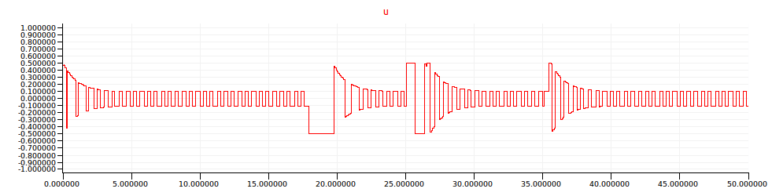

Examples
Bouncing ball
A slight variation of the classic bouncing ball model: a ball bouncing down
a set of steps. The instants of impact are detected using zero crossings,
up(ground(x) -. y), which trigger a reset of the balls vertical velocity
to -0.8 its previous value.

In the basic version of the program, the ball ‘falls through the floor’ due to limited floating-point precision.
(** Bouncing ball. *)
(* [ground x] returns the position in [y] *)
let ground x = World.ground(x)
let ground_abs x = World.ground_abs(x)
let x_0 = 0.0
let y_0 = 8.0
let x_v = 0.72
let g = 9.81
let loose = 0.8
(* The bouncing ball *)
let hybrid ball(x, y_0) = (y, y_v, z) where
rec
der y = y_v init y_0
and
der y_v = -. g init 0.0 reset z -> (-. loose *. last y_v)
and z = up(ground(x) -. y)
(* Main entry point *)
let hybrid main () =
let der x = x_v init x_0 in
let (y, _, z) = ball(x, y_0) in
let ok = present (period (0.04)) -> () | z -> () in
present ok() -> Showball.show (x fby x, y fby y, x, y);
()
With hybrid automata, it is instead possible to switch to a sliding dynamic when the balls vertical velocity becomes very small.
(** The same as the bouncing ball, this time with a mean *)
(* to avoid crossing the ground *)
(* [ground x] returns the position in [y] *)
let ground x = World.ground(x)
let ground_abs x = World.ground_abs(x)
let x_0 = 0.0
let y_0 = 8.0
let x_v = 0.72
let eps = 0.01
(* The bouncing ball with two modes. *)
let hybrid ball(x_0, y_0) = (x, y) where
rec init y_start = y_0
and der x = x_v init x_0
and
automaton
| Bouncing ->
(* the ball is falling with a possible bound. *)
local z, y_v in
do
(y, y_v, z) = Ball.ball(x, y_start)
until z on (y_v < eps) then Sliding(ground(x))
| Sliding(y0) ->
(* the ball is fixed, i.e., the derivative for y is 0 *)
do
y = y0
until up(x -. ground_abs x)
(* up(y -. eps -. ground(x)) *)
then do next y_start = 0.0 in Bouncing
end
(* Main entry point *)
let hybrid main () =
let (x, y) = ball(x_0, y_0) in
present (period (0.04)) -> Showball.show(x fby x, y fby y, x, y);
()
Bang-Bang Temperature Control
Requires: Lablgtk2
This model is a reimplementation of the Mathworks Simulink example Bang-Bang Control Using Temporal Logic. The main differences with the original model are:
We manually track the bias and slope for integers representing rational values.
We use int for the integer values rather than int8.
The top level of this example comprises three nodes:

Controller
The controller is discrete. It takes two inputs:
reference temperature
This value is a constant 20°C, but it is encoded as a fixed-point integer so that it can be compared directly with the digital temperature value from the environment model. The reference temperature has a value between 0 (-15°C) and 255 (84.609375°C), i.e., a resolution of 0.390625 per bit (0.390625 = 5 / 256 / 0.05).
feedback temperature
A digital temperature measurement.
And provides two outputs:
led: the colour of a light emitting diode on the outside of the controller:
0=off,1=red(not heating),2=green(heating).
boiler: a signal that switches the boiler on (
1) or off (0).
The main part of the controller is an automaton with two top-level states:
Off: The boiler is off. The LED is flashed red at 0.1 Hz (5 secs off, 5 secs red).On: The boiler is on. The LED is flashed red at 0.5 Hz (1 sec off, 1 sec green).
The controller always remains in the Off state for at least 40 seconds,
after which it will switch to the On state if the temperature is less than
the reference temperature.
The controller may not remain in the On state for more than 20 seconds. It
will switch to the Off state if the temperature becomes greater than the
reference temperature.
The on state contains an internal automaton that stays in a High state from
t = 0 until the very first time that the measured temperature exceeds the
reference temperature (this is ensured by entry-by-history from Off). The
reason for this additional complication in the original Stateflow controller
is not clear; perhaps the intent was to heat at a faster rate the first time
the system is switched on? In our model, the effect is to delay an exit from
the On state by one reaction the first time the reference temperature is
attained.
Boiler
Boiler is a hybrid model of the boiler temperature and a digital thermometer.
The boiler temperature is modeled by a single integrator with an initial value of 15°C. This value (cools) at a rate of -0.1 / 25 when the boiler is off. It changes (heats) at a rate of 1.0 / 25 when the boiler is on.
The digital thermometer is modelled in some detail. Effectively, it takes a floating point temperature value in degrees centigrade and returns an integer between 0 and 255 representing that value (see the discussion above for the reference temperature).
The sensor itself has a bias of 0.75 and and a precision of 0.05, i.e., the
output voltage V is a function of the temperature T: V = 0.05 * T + 0.75. An
analog-to-digital converter (ADC) converts this voltage into an integer. By
scaling, quantization, and limiting.
Scope
Scope is a discrete node. It is triggered every sample_period to plot the
LED output, the boiler command, and the actual temperature against time.
Note that, even though all of these signals are continuous, they are plotted at discrete instants (as plotting is a side-effect) and the graph is thus (linearly) interpolated.
Simulation

The simulation output shows a staircased increase in temperature from 15°C
at t = 0 to the 20°C just before t = 500. The initial rising edges have a
slope of 1.0/25 (the heating rate) and a duration of 20 seconds (the maximum
amount of time in the On state). The initial falling edges have a slope of
0.1/25 (the cooling rate) and a duration of 40 seconds (the minimum amount
of time in the Off state). After reaching the reference temperature, the
controller switches on and off to oscillate around the set-point.
The LED will flash green (2) during periods of heating, and red (1) during
periods of cooling, i.e., when not heating.
(*
Version of the Mathworks Simulink example:
Bang-Bang Control Using Temporal Logic
*)
(* ** library functions ** *)
let hybrid integrator (i, u) = y where
der y = u init i
let node round x = floor (x +. 0.5)
(* ** model of analog-to-digital convertor ** *)
let node quantize (q, u) = q *. round(u /. q)
(* limiting without zero-crossings *)
let node limit (min, max, x) =
if x >= max then max
else if x <= min then min
else x
let node adc (v) = pcm where
rec vs = v *. (256.0 /. 5.0)
and pcm = quantize (1.0, limit (0.0, 255.0, vs))
(* ** model of digital thermometer ** *)
let node digital_thermometer (temp) = int_of_float(adv) where
rec voltage = 0.05 *. temp +. 0.75
and adv = adc (voltage)
(* signed fixed-point int from scale and bias *)
let discrete fixdt (s, b, v) = int_of_float ((v -. b) /. s)
(* ** model of boiler plant with an exponential ** *)
let hybrid boiler_exponential(k1, k2, is_on) = actual_temp where
rec der actual_temp =
(* two modes. [is_on] is a boolean and will only change *)
(* at a zero-crossing instant. *)
if is_on then k1 -. k2 *. actual_temp
else -. k2 *. actual_temp
init 15.0
(* the one below is the Simulink version with an approximation by a *)
(* linear function *)
let hybrid boiler(is_on) = actual_temp where
rec der actual_temp =
(* two modes. [is_on] is a boolean and will only change *)
(* at a zero-crossing instant. *)
(if is_on then 1.0 else -0.1) /. 25.0
init 15.0
(* ** Bang-Bang Controller ** *)
let off = 0
let red = 1
let green = 2
let b_off = false
let b_on = true
let node after (x) =
let rec c = x fby max (0, c - 1) in
c = 0
let node at (x) =
let rec c = 0 fby ((c + 1) mod x) in
false -> (c = 0)
let node flash_led (color, delay) = led where
automaton
| Off -> do led = off until (after delay) then On
| On -> do led = color until (after delay) then Off
let node controller (ref, temp) = (led, boiler) where
rec cold = temp <= ref
and automaton
| Off ->
do boiler = b_off
and led = flash_led (red, 5)
until (after 40) & cold then On
| On ->
do boiler = b_on
and led = flash_led (green, 1)
until (not cold) then Off
else (at 20) then Off
(* ** main ** *)
let reference = fixdt (5.0 /. 256.0 /. 0.05, -. 0.75 /. 0.05, 20.0)
let hybrid model () = (led, on_off, actual_temp) where
rec trigger = period (1.0)
and (led, on_off) =
present trigger -> controller(reference, last digital_temp)
init (red, false)
and actual_temp = boiler(on_off)
and digital_temp =
present trigger -> digital_thermometer (actual_temp)
init 0
open Scope (* Dump *)
let sample_period = 1.0
let node bool_to_float(x) = if x then 1.0 else 0.0
let node plot (led, boiler, temp) =
let s1 =
scope (0.0, 2.0, ("led (0=OFF, 1=RED, 2=GREEN)", points true, float(led))) in
let s2 =
scope (0.0, 1.0, ("boiler (0=OFF, 1=ON)", points true, bool_to_float(boiler))) in
let s3 =
scope (11.0, 25.0, ("temperature (degC)", linear, temp)) in
let rec t = 0.0 fby t +. sample_period in
window3 ("bangbang", 600.0, t, s1, s2, s3)
let hybrid main () =
let (led, on_off, actual_temp) = model () in
let trigger = period (0.5) in
present trigger -> plot (led, on_off, actual_temp) else ()
Self-Oscillating Adaptive System
Requires: Lablgtk2
This example comes from Chapter 10 of Åström and Wittenmark's Adaptive Control (2nd edition).
It involves the control of a simple process using adaptive relay feedback. Together, the process and relay incite limit cycle oscillations, giving systems with high feedback loop gain.
Three variations of the system are developed. The shared elements are incorporated into a single file:
(*
Example 10.2 (A basic SOAS)
from "Adaptive Control", 2e, Åström and Wittenmark, 2008
*)
(* ** library functions ** *)
(* linear first-order single-input single-output system *)
let hybrid siso_1o (a, b, c, d, u) = y where
rec der x1 = a *. x1 +. b *. u init 0.0
and y = c *. x1 +. d *. u
(* linear second-order single-input single-output system *)
let hybrid siso_2o ((a11, a12, a21, a22), (b1, b2), (c1, c2), d, u) = y where
rec der x1 = a11 *. x1 +. a12 *. x2 +. b1 *. u init 0.0
and der x2 = a21 *. x1 +. a22 *. x2 +. b2 *. u init 0.0
and y = c1 *. x1 +. c2 *. x2 +. d *. u
(* linear third-order single-input single-output system *)
let hybrid siso_3o ((a11, a12, a13, a21, a22, a23, a31, a32, a33),
(b1, b2, b3), (c1, c2, c3), d, u) = y where
rec der x1 = a11 *. x1 +. a12 *. x2 +. a13 *. x3 +. b1 *. u init 0.0
and der x2 = a21 *. x1 +. a22 *. x2 +. a23 *. x3 +. b2 *. u init 0.0
and der x3 = a31 *. x1 +. a32 *. x2 +. a33 *. x3 +. b3 *. u init 0.0
and y = c1 *. x1 +. c2 *. x2 +. c3 *. x3 +. d *. u
(* The initial state should be Low when e < 0 *)
(* ideal relay model *)
let hybrid relay (d, e) = u where
automaton
| High -> do u = d until up(-. e) then Low
| Low -> do u = -. d until up(e) then High
(* ** model ** *)
(* feed-forward reference model
damping factor z = 0.7;
natural frequency w = 1.0 rad/sec;
The state-space realization can be calculated in Matlab:
[A, B, C, D] = ord2(1.0, 0.7)
Or in Scilab:
s = %s; wn = 1.0; zeta = 0.7;
tf2ss(syslin('c', wn^2, s^2 + 2*zeta*wn*s + wn^2))
*)
let hybrid reference u =
siso_2o ((0.0, 1.0, -1.0, -1.4), (0.0, 1.0), (1.0, 0.0), 0.0, u)
let hybrid command () = u where
automaton
| S0 -> do u = 1.0 until (period (17.5)) then S1
| S1 -> do u = -1.0 until (period (17.5)) then S2
| S2 -> do u = 1.0 done
(* compensation network
s + 5
G_f(s) = 1.2 * ( -------- )
s + 15
The state-space realization can be calculated in Matlab:
[a, b, c, d] = ss(1.2 * tf([1 5], [1 15]))
or in Scilab:
s = poly(0, 's')
[a, b, c, d] = abcd(tf2ss(1.2 * (s + 5) / (s + 15)))
*)
let hybrid g_f u = siso_1o (-15.0, 4.0, -3.0, 1.2, u)
(* up-logic gain changer *)
(* The initial state should be D1 when |e| > e_l *)
let hybrid gain_changer (d1, d2, e_l, e) = d where
automaton
| D2 -> local t in
do
der t = 1.0 init 0.0
and d = d2 +. (d1 -. d2) *. exp(-.t)
until up(abs_float e -. e_l) then D1
| D1 -> do d = d1 until up(e_l -. abs_float e) then D2
(* The process:
G(s) = K * alpha
-------------------
s(s + 1)(s + alpha)
"The nominal values of the parameters are K = 3, ..., and alpha = 20."
The state-space realization can be calculated in Matlab:
sys1 = tf(60, [1 21 20 0])
[a, b, c, d] = ss()
"The process gain is suddenly increaed by a factor of 5 at t = 25."
sys2 = 5 * sys1
[a, b, c, d] = ss(sys2)
And similarly in Scilab:
s=%s
sys1 = 60 / (s * (s + 1) * (s + 20))
[a, b, c, d] = abcd(sys1)
sys2 = 5 * sys1
[a, b, c, d] = abcd(sys2)
*)
let hybrid process u = y where
rec automaton
| G5 -> do b1 = 4.0 and c3 = 3.750 until (period (25.0)) then G15
| G15 -> do b1 = 8.0 and c3 = 9.375 done
and y = siso_3o ((-21.0, -5.0, 0.0,
4.0, 0.0, 0.0,
0.0, 1.0, 0.0),
(b1, 0.0, 0.0), (0.0, 0.0, c3), 0.0, u)
open Scope (* Dump *)
let hybrid plot (title, y, y_m, u, e) = () where
_ = present (period (0.08)) -> (
let
rec s1 = scope2 (-1.5, 1.5, ("y_m", linear, y_m),
("y", linear, y))
and s2 = scope (-1.0, 1.0, ("u", square, u))
and s3 = scope (-1.0, 1.3, ("e", linear, e))
and t = 0.0 fby t +. 0.08
in window3 (title, 50.0, t, s1, s2, s3))
The models are tested over a period of 50s in response to a command
signal which starts at 1 initially, drops to 0 at 17.5 seconds, and
then rises to 1 again at 35 seconds.
The command signal is defined using a hybrid automaton in a node called
command.

The process to be controlled is described by the transfer function:

where, initially, K = 3 and α = 20, but where the process gain is suddenly increased by a factor of 5 at t = 25. The state-space realizations of these two systems are readily calculated in either Matlab:
sys1 = tf(60, [1 21 20 0])
[a, b, c, d] = ss()
sys2 = 5 * sys1
[a, b, c, d] = ss(sys2)
or Scilab:
s=
sys1 = 60 / (s * (s + 1) * (s + 20))
[a, b, c, d] = abcd(sys1)
sys2 = 5 * sys1
[a, b, c, d] = abcd(sys2)
We implement them in a node called process using a hybrid automaton and a
generic siso_3o node that takes the state-space matrices as tupled
arguments.
Basic SOAS
The first model comprises a simple feedback loop—relay, process, and inverter—that tries to follow the reponse of a reference model to the command signal. Other elements will be added successively.

(*
Example 10.2 (A basic SOAS)
from "Adaptive Control", 2e, Åström and Wittenmark, 2008
*)
open Soas
let hybrid main () = () where
rec i = command ()
and y_m = reference i
and u = relay (0.35, e)
and e = y_m -. y
(* Rmk: we should be able to put the automaton below *)
(* into a function. We can not for the moment as there *)
(* is no inlining of function call a priori *)
and automaton
| G3 -> do b1 = 4.0 and c3 = 3.750 until (period (25.0)) then G15
| G15 -> do b1 = 8.0 and c3 = 9.375 done
and der x1 = -21.0 *. x1 +. -5.0 *. x2 +. b1 *. u init 0.0
and der x2 = 4.0 *. x1 init 0.0
and der x3 = 1.0 *. x2 init 0.0
and y = c3 *. x3
and () = plot ("Basic SOAS", y, y_m, u, e)
The reference model is described as a second order system with damping coefficient ζ = 0.7 and natural frequency ω_n = 1 rad/sec. Its state-space realization is readily calculated in either Matlab:
[A, B, C, D] = ord2(1.0, 0.7)or Scilab:
s = ; wn = 1.0; zeta = 0.7;
tf2ss(syslin('c', wn^2, s^2 + 2*zeta*wn*s + wn^2))We express it in a node called reference using a generic siso_2o node.
The response of the reference model to the command input is shown in red below. The actual output of the feedback loop is shown in blue.

The relay is modelled in a node called relay using a hybrid
automaton that alternates between High (output = d) and Low (output =
-d) states in response to zero-crossings on its input signal.
The relay's value is shown below.

SOAS with lead network
The next model augments the basic model with a compensation network that adds a phase lead of -π.

(*
Example 10.2 (A basic SOAS)
from "Adaptive Control", 2e, Åström and Wittenmark, 2008
*)
open Soas
let hybrid main () = () where
rec i = command ()
and y_m = reference i
and u = relay (0.35, g_f e)
and e = y_m -. y
(* Rmk: we should be able to put the automaton below *)
(* into a function. We can not for the moment as there *)
(* is no inlining of function call a priori *)
and automaton
| G3 -> do b1 = 4.0 and c3 = 3.750 until (period (25.0)) then G15
| G15 -> do b1 = 8.0 and c3 = 9.375 done
and der x1 = -21.0 *. x1 +. -5.0 *. x2 +. b1 *. u init 0.0
and der x2 = 4.0 *. x1 init 0.0
and der x3 = 1.0 *. x2 init 0.0
and y = c3 *. x3
and () = plot ("SOAS with lead network", y, y_m, u, e)
The compensation filter is defined as a transfer function:

which is implemented in the node g_f using the generic node siso_1o
after having calculated its state-space realization in either
Matlab:
[a, b, c, d] = ss(1.2 * tf([1 5], [1 15]))or Scilab:
s = poly(0, 's')
[a, b, c, d] = abcd(tf2ss(1.2 * (s + 5) / (s + 15)))The compensation filter decreases the amplitude of oscillation while maintaining the reponse speed, as can be seen in the simulation results below.

SOAS with lead network and gain changer
A gain changer is added in the final model. It uses so called up logic to speed up the controller's reponse.

(*
Example 10.2 (A basic SOAS)
from "Adaptive Control", 2e, Åström and Wittenmark, 2008
*)
open Soas
let hybrid main () = () where
rec i = command ()
and y_m = reference i
and u = relay (gain_changer (0.5, 0.1, 0.1, e), g_f e)
and e = y_m -. y
(* Rmk: we should be able to put the automaton below *)
(* into a function. We can not for the moment as there *)
(* is no inlining of function call a priori *)
and automaton
| G3 -> do b1 = 4.0 and c3 = 3.750 until (period (25.0)) then G15
| G15 -> do b1 = 8.0 and c3 = 9.375 done
and der x1 = -21.0 *. x1 +. -5.0 *. x2 +. b1 *. u init 0.0
and der x2 = 4.0 *. x1 init 0.0
and der x3 = 1.0 *. x2 init 0.0
and y = c3 *. x3
and () = plot ("SOAS with lead network and gain changer", y, y_m, u, e)
A gain changer increases the relay's amplitude (d) when a specified
tolerance (e_l) is exceeded.

This logic is readily implemented in the gain_changer node using a hybrid
automaton.
The simulation results show that the new controller responds with smaller amplitude oscillations to the system with higher gain, without losing performance for the system with smaller gain.

The effect of the gain changing logic on the relay output is evident in the exponential envelopes on the signal shown below.

Sticky Masses
Requires: Lablgtk2 (glMLite)
This example is based on example 6.8 in Edward A. Lee and Pravin Varaiya, Structure and Interpretation of Signals and Systems, Second Edition, and the Ptolemy II model by Jie Liu, Haiyang Zheng, and Edward A. Lee.

The model comprises two sticky round masses, each on the end of a spring. The other ends of the springs are tied to opposing walls. After the springs are compressed (or extended) and released the masses oscillate back and forth, and may collide. After a collision, the masses remain stuck together until the pulling forces from the springs are greater than a stickiness value (which decreases exponentially after a collision).
(* ** Parameters ** *)
(* neutral positions of the two masses *)
let p1 = 1.25
let p2 = 1.75
(* initial positions of the two masses: y1_i < y2_i *)
let x1_i = 0.0
let x2_i = 3.0
(* spring constants *)
(* let k1 = 4.0 (* exhibits problem *) *)
let k1 = 1.0
let k2 = 2.5 (* 2.0 *)
(* masses *)
let m1 = 1.5
let m2 = 1.0
(* stickyness *)
let stickiness_max = 10.0
let tau = 0.5
(* ** Model ** *)
let hybrid sticky () =
((x1, v1), (x2, v2), pull, stickiness_out, total) where
rec der x1 = v1 init x1_i
and der x2 = v2 init x2_i
and init v1 = 0.0
and init v2 = 0.0
and total = 0.5 *. m1 *. v1 *. v1 +. 0.5 *. m2 *. v2 *. v2 +.
0.5 *. k1 *. (x1 -. p1) *. (x1 -. p1) +.
0.5 *. k2 *. (x2 -. p2) *. (x2 -. p2)
and automaton
| Apart ->
local mediant in
do der v1 = k1 *. (p1 -. x1) /. m1
and der v2 = k2 *. (p2 -. x2) /. m2
and mediant = (v1 *. m1 +. v2 *. m2) /. (m1 +. m2)
and pull = 0.0
and stickiness_out = 0.0
until up (x1 -. x2) then
do next v1 = mediant
and next v2 = mediant in Together
| Together ->
local y_dot_dot, stickiness in
do pull =
abs_float (-. last x1 *. (k1 +. k2) +. (k2 *. p2 -. k1 *. p1))
and y_dot_dot =
(k1 *. p1 +. k2 *. p2 -. (k1 +. k2) *. last x1) /. (m1 +. m2)
and der v1 = y_dot_dot
and der v2 = y_dot_dot
and der stickiness = -. stickiness /. tau init stickiness_max
and stickiness_out = stickiness
until up (pull -. stickiness) then Apart
(* ** plotting ** *)
open Scope
let node plot (t, (y1, y1_dot), (y2, y2_dot), pull_force, stickiness, total) =
let s1 = scope2 (0.0, 3.0, ("p1", linear, y1), ("p2", linear, y2)) in
let s2 = scope2 (-1.5, 1.5, ("v1", linear, y1_dot), ("v2", linear, y2_dot)) in
let s3 = scope2 (0.0, stickiness_max, ("Pulling force", linear, pull_force),
("Stickiness", linear, stickiness)) in
let s4 = scope (0.0, 3.0, ("Total Energy", linear, total)) in
window4 ("sticky springs", 30.0, t, s1, s2, s3, s4)
(* ** main ** *)
let hybrid main () =
let der t = 1.0 init 0.0 in
let ((y1, y1_dot), (y2, y2_dot), pull_force, stickiness, total) = sticky () in
present
(period (0.10)) ->
plot (t, (y1, y1_dot), (y2, y2_dot), pull_force, stickiness, total);
()
Backhoe
Requires: Lablgtk2
The Backhoe loader is an original example that we developed to teach reactive programming.

The model comprises two interconnected elements:
- a continuous model of the plant (parts of the backhoe)
- a discrete controller
The original programming challenge focused on the discrete controller, but expressing the continuous dynamics is also an interesting programming problem, as is interfacing the two models.

The discrete controller receives input from sensors which are defined inside
the continuous model. There are sensors for each of three buttons
(stop_button, extend_button, and retract_button), for indicating
whether the legs are fully retracted (legs_in) or fully extended
(legs_out), and for indicating whether each of the rear segments is fully
retracted (*_in) or fully extended (*_out).
There are control signals for three lamps (alarm_lamp, done_lamp, and
cancel_lamp) and for triggering leg extension (legs_extend), leg
retraction (legs_retract), and stopping leg motion (legs_step). There
are three control signals pel segment: setting an internal valve for pushing
(*_push), or for pulling (*_pull), and for driving hydraulic fluid
through the valve (*_drive). It is assumed that a lower-level controller
maintains a segments position when it is not being driven.

Each segment is modelled using set of equations that include a hybrid automaton. Two types of dynamics are modelled: moving and stopping with momentum (modelled as a Proportional-Integral controller) and bouncing at the limits of movement (modelled as instantaneous reset).
let node after (n, t) = (c = n) where
rec c = 0 fby min ((if t then c + 1 else c), n)
let node blink (n, t) = x where
automaton
| On -> do x = true until (after (n, t)) then Off
| Off -> do x = false until (after (n, t)) then On
let node blink2(ton, toff, t) = x where
automaton
| On -> do x = true until (after (ton, t)) then Off
| Off -> do x = false until (after (toff, t)) then On
let node leg_controller
((legs_in, legs_out), (stop_button, retract_button, extend_button), second) =
((legs_extend, legs_retract, legs_stop), alarm, extended)
where
rec init alarm = false
and init extended = false
and automaton
| LegsIn ->
do alarm = false
until extend_button then LegsMoving(true)
| LegsMoving(extend) ->
local at_extremity in
do init at_extremity = false
and
automaton
| Initial ->
do
unless extend then Extending
else (not extend) then Retracting
| Extending ->
do
emit legs_extend
until stop_button then Stopped
else retract_button then Retracting
else legs_out then Done
| Retracting ->
do
emit legs_retract
until stop_button then Stopped
else extend_button then Extending
else legs_in then Done
| Stopped ->
do
emit legs_stop
until extend_button then Extending
else retract_button then Retracting
| Done -> do at_extremity = true done
and alarm = false -> not (pre alarm)
and extended = false
until (at_extremity && legs_out) then LegsOut
else (at_extremity && legs_in) then LegsIn
else (after(20, second)) then Error
| LegsOut ->
do
extended = true and alarm = false
unless retract_button then LegsMoving(false)
| Error ->
do
alarm = true
and emit legs_retract
until legs_in then LegsIn
let node sampled_controller
((leg_sensors, (boom_in, boom_out), (stick_in, stick_out), (bucket_in, bucket_out)),
(stop_button, retract_button, extend_button), second)
= ((boom_push, boom_pull, boom_drive),
(stick_push, stick_pull, stick_drive),
(bucket_push, bucket_pull, bucket_drive),
(legs_extend, legs_retract, legs_stop),
(alarm_lamp, done_lamp, cancel_lamp))
where
rec init boom_drive = false
and init stick_drive = false
and init bucket_drive = false
and init alarm_lamp = false
and init done_lamp = false
and init cancel_lamp = false
and init legs_extended = false
and automaton
| Legs ->
do alarm_lamp = leg_alarm
and done_lamp = false
and ((legs_extend, legs_retract, legs_stop), leg_alarm, legs_extended)
= leg_controller (leg_sensors, (stop_button, retract_button, extend_button), second)
until (legs_extended) then Stable
| Stable ->
do alarm_lamp = false
and done_lamp = true
and cancel_lamp = false
until extend_button then Dig
unless retract_button continue Legs
| Dig ->
local finished in
do init finished = false
and
automaton
| Move ->
do done_lamp = false
and alarm_lamp = blink(2, second)
and
automaton
| RaiseStickBucket ->
do emit stick_pull and stick_drive = true
and emit bucket_pull and bucket_drive = true
unless (stick_in && bucket_in) then LowerBoom
| LowerBoom ->
do emit boom_push and boom_drive = true
and bucket_drive = false and stick_drive = false
unless boom_out then FillStickBucket
| FillStickBucket ->
do emit stick_push and stick_drive = true
and emit bucket_push and bucket_drive = true
and boom_drive = false
until (stick_out && boom_out) then RaiseBoom
| RaiseBoom ->
do emit boom_pull and boom_drive = true
and bucket_drive = false and stick_drive = false
until (boom_in) then Finished
| Finished ->
do finished = true done
until (stop_button) then Pause
| Pause ->
do alarm_lamp = false
and done_lamp = blink2(4, 2, second)
and boom_drive = false
and stick_drive = false
and bucket_drive = false
until (extend_button) continue Move
else (retract_button || after(30, second)) then Cancel
| Cancel ->
do cancel_lamp = blink(1, second)
and alarm_lamp = false
and done_lamp = false
and emit boom_pull and boom_drive = true
and emit stick_push and stick_drive = true
and emit bucket_push and bucket_drive = true
and finished = boom_in && stick_out && bucket_out
done
until (finished) then Stable
let hybrid main () = () where
rec init sensors = ((false, false), (false, false),
(false, false), (false, false))
and init boom_drive = false
and init stick_drive = false
and init bucket_drive = false
and init alarm_lamp = false
and init done_lamp = false
and init cancel_lamp = false
and present sample ->
do ((boom_push, boom_pull, boom_drive),
(stick_push, stick_pull, stick_drive),
(bucket_push, bucket_pull, bucket_drive),
(legs_extend, legs_retract, legs_stop),
(alarm_lamp, done_lamp, cancel_lamp)) =
sampled_controller (last sensors, Backhoedyn.buttons (), second)
done
and sensors =
Backhoedyn.model ((boom_push, boom_pull, boom_drive),
(stick_push, stick_pull, stick_drive),
(bucket_push, bucket_pull, bucket_drive),
(legs_extend, legs_retract, legs_stop),
(alarm_lamp, done_lamp, cancel_lamp))
and sample = period (0.5)
and second = present sample -> not (last second) init true
(** Model constants *)
let boom_rate = 0.4
let stick_rate = 0.5
let bucket_rate = 0.35
let leg_rate = 4.0
(** Model components *)
let hybrid segment ((min, max, i), maxf, (push, pull, go))
= ((segin, segout), angle) where
rec der angle = v init i
and error = v_r -. v
and der v = (0.7 /. maxf) *. error +. 0.3 *. z init 0.0
reset hit(v0) -> v0
and der z = error init 0.0 reset hit(_) -> 0.0
and v_r = if go then rate else 0.0
and init (segin, segout) = (angle <= min, angle >= max)
and automaton
| Stuck -> do
rate = 0.0
until push() on (angle < max) then
do segin = false and segout = false in Pushing
else pull() on (angle > min) then
do segin = false and segout = false in Pulling
| Pushing -> local atlimit in
do
rate = maxf
and atlimit = up(angle -. max)
until atlimit on (last v > 0.3 *. maxf) then do
emit hit = -0.8 *. last v in Pushing
else (atlimit) then do segout = true in Stuck
else pull() then Pulling
| Pulling -> local atlimit in
do
rate = -. maxf
and atlimit = up(min -. angle)
until atlimit on (last v < -0.3 *. maxf) then do
emit hit = -0.8 *. last v in Pulling
else (atlimit) then do segin = true in Stuck
else push() then Pushing
let hybrid legsegment ((min, max, i), rate, (extend, retract, stop)) =
((segin, segout), pos) where
rec init pos = i
and init segin = pos <= min
and init segout = pos >= max
and automaton
| Stationary ->
do
der pos = 0.0
until extend() on (not segout)
then do next segin = false in Extending
else retract() on (not segin)
then do next segout = false in Retracting
| Extending ->
do
der pos = rate
until up(pos -. max)
then do next segout = true in Stationary
else stop() then Stationary
else retract() then Retracting
| Retracting ->
do
der pos = -. rate
until up(min -. pos) then do next segin = true in Stationary
else stop() then Stationary
else extend() then Extending
(** Put the model together and link it to the GUI *)
open Backhoegui
let node buttons () = showsample ()
let hybrid model
(boom_control, stick_control, bucket_control, leg_control, lamp_control) =
let (boom_sensors, boom_ang)
= segment (boom_range, boom_rate, boom_control)
and (stick_sensors, stick_ang)
= segment (stick_range, stick_rate, stick_control)
and (bucket_sensors, bucket_ang)
= segment (bucket_range, bucket_rate, bucket_control)
and (leg_sensors, leg_pos)
= legsegment (leg_range, leg_rate, leg_control)
and refresh_rate = period (0.1) in
let
rec (alarm_lamp, done_lamp, cancel_lamp) = lamp_control
and _ =
present
| refresh_rate ->
showupdate (leg_pos, boom_ang, stick_ang, bucket_ang,
alarm_lamp, done_lamp, cancel_lamp)
in
(leg_sensors, boom_sensors, stick_sensors, bucket_sensors)
Further details can be found in the paper Zélus: A Synchronous Language with ODEs.
Airtraffic Control
Requires: Lablgtk2
This example is taken from the paper: Conflict Resolution for Air Traffic Management: A Case Study in Multiagent Hybrid Systems, Tomlin, Pappas, Sastry, 1998.
It models a conflict resolution manouever for two planes: Aircraft1 and Aircraft2. Both aircraft are flying at a similar altitude and with constant velocity and heading. Two zones are defined around each aircraft:

A conflict resolution manouever is considered when two planes have entered into each other's alert zones. The system aims to ensure that neither plane ever enters the other's protected zone.
In the model, the position and heading of Aircraft1 define, respectively, the origin and direction of the positive x-axis of a relative coordinate system, in which the position of Aircraft2 is specified. The heading of Aircraft2 is specified relative to the positive x-axis.

The initial condition in the model is that the aircraft are cruising outside each other's protected zones, but inside each other's alert zones.
The manouever modelled in this case is (taken directly from the paper):
Cruise
Cruise until aircraft are
alpha1miles apart.Left
Make a heading change of
delta_phiand fly until a lateral displacement of at leastdmiles is acheived for both aircraft.Straight
Make a heading change to the original heading and fly until the aircraft are
alpha2miles apart.Right
Make a heading change of
-delta_phiand fly until a lateral displacement of d miles is acheived for both aircraft.Cruise
Make a heading change to original heading and cruise.
Note that, in the model at least, the heading changes occur simultaneously and instantaneously.
(*
* This example is taken from the paper:
* "Conflict Resolution in Air Traffic Management; A Study in Multiagent
* Hybrid Systems", Tomlin, Pappas, Sastry, 1998
*)
(** constants, initial state **)
let pi = 4.0 *. atan 1.0
let d = 10.0 (* distance to deviate for avoidance, in miles *)
let delta_phi = (pi /. 4.0) (* change in heading for avoidance, radians *)
let radius_protected = 5.0 (* radius of the protected zone, in miles *)
let radius_alert = 25.0 (* radius of the alert zone, in miles *)
let alpha1 = 16.0 (* distance at which avoidance is triggered *)
let alpha2 = 20.0 (* distance at which avoidance is terminated *)
(* velocity in miles/hour converted to miles/minute *)
let aircraft1_v = 540.0 /. 3600.0 (* velocity of aircraft1 *)
let aircraft2_v = 570.0 /. 3600.0 (* velocity of aircraft2 *)
(* initial position of aircraft2, relative to aircraft1 *)
let aircraft2_xi = 60.0
let aircraft2_yi = 28.0
let aircraft2_thetai = -. 3.0 *. pi /. 4.0
(** algorithm **)
let rotate (theta, x, y) = (x', y') where
rec cos_theta = cos(theta)
and sin_theta = sin(theta)
and x' = (cos_theta *. x) +. (-. sin_theta *. y)
and y' = (sin_theta *. x) +. (cos_theta *. y)
let rotate_x (theta, x, y) = (cos(theta) *. x) +. (-. sin(theta) *. y)
let rotate_y (theta, x, y) = (sin(theta) *. x) +. (cos(theta) *. y)
let sqr x = x *. x
let hybrid integr(x', x0) = x where rec der x = x' init x0
let hybrid avoidance (x_i, y_i, theta_i, v_1, v_2) = (st, x, y, theta, t) where
rec init theta = theta_i
and der x = -. v_1 +. v_2 *. cos(theta) init x_i reset nxy(nx, _) -> nx
and der y = v_2 *. sin(theta) init y_i reset nxy(_, ny) -> ny
and der t = t' init 0.0
and automaton
| Cruise ->
do
t' = 0.0
and st = 0
until up(sqr(alpha1) -. sqr(last x) -. sqr(last y))
then do emit nxy = rotate(-. delta_phi, last x, last y) in Left
| Left ->
local t1, t2 in
do
t1 = d /. (v_1 *. sin(delta_phi))
and t2 = d /. (v_2 *. sin(delta_phi))
and t' = 1.0
and st = 1
until up(t -. t1)
then do emit nxy = rotate(delta_phi, last x, last y) in Straight
else up(t -. t2)
then do emit nxy = rotate(delta_phi, last x, last y) in Straight
| Straight ->
do
t' = 0.0
and st = 2
until up(sqr(last x) +. sqr(last y) -. sqr(alpha2))
then do emit nxy = rotate(delta_phi, last x, last y) in Right
| Right ->
do
t' = -. 1.0
and st = 3
until up(-. t)
then do emit nxy = rotate(-. delta_phi, last x, last y) in Cruise
let hybrid noavoidance (x_i, y_i, theta_i, v_1, v_2) = (0, x, y, theta, t) where
rec theta = theta_i
and der x = -. v_1 +. v_2 *. cos(theta) init x_i
and der y = v_2 *. sin(theta) init y_i
and t = 0.0
(** Animation **)
open Airtrafficgui
let hybrid main () = () where
rec p = period (1.0)
and (click, (nxr, nyr), (ntheta_r, nd)) =
present p -> sample ()
init (false, (aircraft2_xi, aircraft2_yi), (aircraft2_thetai, 0.0))
and automaton
S1 -> do
(st, xr, yr, theta_r, t) =
avoidance (nxr, nyr, ntheta_r, aircraft1_v, aircraft2_v)
until p on click then S1
and _ = present p -> showupdate (d, delta_phi, radius_alert, radius_protected, 0.0,
st, xr, yr, theta_r, aircraft1_v, aircraft2_v, t)